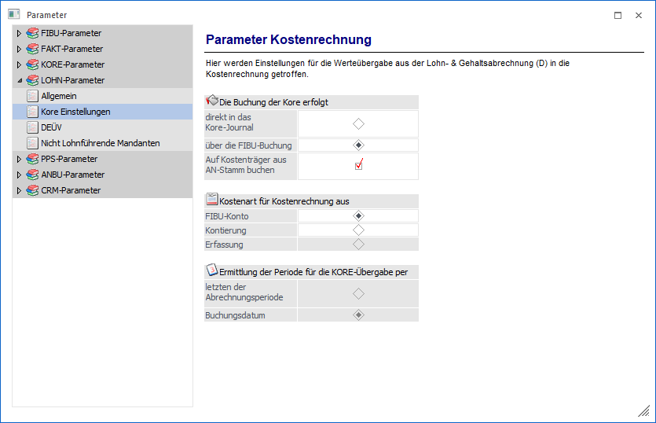

Die Buchung der Kore erfolgt
Über diese Einstellung wird entschieden, wie die Lohnbuchungen an die Kostenrechnung übergeben werden sollen.
Hinweis
Die Einstellungen, die zum Zeitpunkt der Erfassung hinterlegt sind, bilden die Grundlage für die KORE-Buchung.
Ø Direkt in das Kore-Journal
Mit dieser Einstellung werden die Buchungen aus dem LOHN DE direkt in die KORE übergeben. Im LOHN DE steht dafür das Programm Abschluss / KORE-Übergabe zur Verfügung.
Ø Über die FIBU-Buchung
Werden die Buchungen aus dem LOHN DE über die FIBU-Buchung an die KORE übergeben, erfolgt dies beim Verbuchungen des LOHN-Stapels, der zuvor unter Auswertungen / Buchungsbeleg erzeugt wurde.
Ø Auf Kostenträger aus den AN-Stamm buchen
Diese Option steht nur zur Verfügung, wenn die KORE-Buchungen über die FIBU-Buchung erfolgen. Es können auch die Kostenträger, sofern sie im Arbeitnehmerstamm hinterlegt sind, bebucht werden.
Kostenart für Kostenrechnung aus
Mit dieser Einstellung kann gesteuert werden, woher die Kostenarten für die Übergabe in die WinLine KORE genommen werden sollen. Kostenarten können in der Kontierung hinterlegt sein, in der Erfassung eingegeben werden oder durch das FIBU-Konto aus der WinLine FIBU angesprochen werden.
Ø Fibu-Konto
Wird diese Option gewählt, werden die Kostenarten aus den FIBU-Konten, die in der Kontierung hinterlegt wurden, direkt in der WinLine FIBU angesprochen. In der Kontierung darf dann keine Kostenart hinterlegt werden. Ist in der Kontierung und im Konto der WinLine FIBU eine Kostenart eingetragen, wird keine Kostenart verwendet.
ü Vorteil
Da die Kostenart beim
FIBU-Konto hinterlegt werden muss, kann es nicht vorkommen, dass z. B. eine
nicht existierende Kostenart hinterlegt wird.
ü Nachteil
Wenn die
Kostenrechnung extern geführt wird, müssen die gewünschten Kostenarten trotzdem
in der WinLine KORE angelegt werden (z. B. als Demo-Benutzer).
Ø Kontierung
Wird diese Option gewählt, wird die Kostenart aus der entsprechenden Spalte der Kontierung geholt, die Kostenarten der hinterlegten Konten in der WinLine FIBU werden nicht geprüft.
Ø Erfassung
Wird diese Option gewählt, wird bei einer Integration auf die Kostenart gebucht, die in der Einzelabrechnung/Erfassung eingegeben wird. Diese Option steht nur zur Verfügung, wenn die Buchungen direkt in das KORE-Journal übergeben werden.
Ermittlung der Periode für die Kostenrechnungsübergabe erfolgt per
Mit dieser Einstellung kann gesteuert werden, ob nach der Abrechnungsperiode oder nach dem Buchungsdatum die Übergabe für die Kostenarten in die WinLine KORE erfolgen soll. Diese Option steht nur zur Verfügung, wenn die Buchungen direkt in das KORE-Journal übergeben werden.
Ø letzten der Abrechnungsperiode
Wird diese Option gewählt, erfolgt die Kostenrechnungsübergabe mit dem letzten Tag der Abrechnungsperiode.
Ø Buchungsdatum
Wird diese Option gewählt, erfolgt die Kostenrechnungsübergabe nach dem Buchungsdatum.